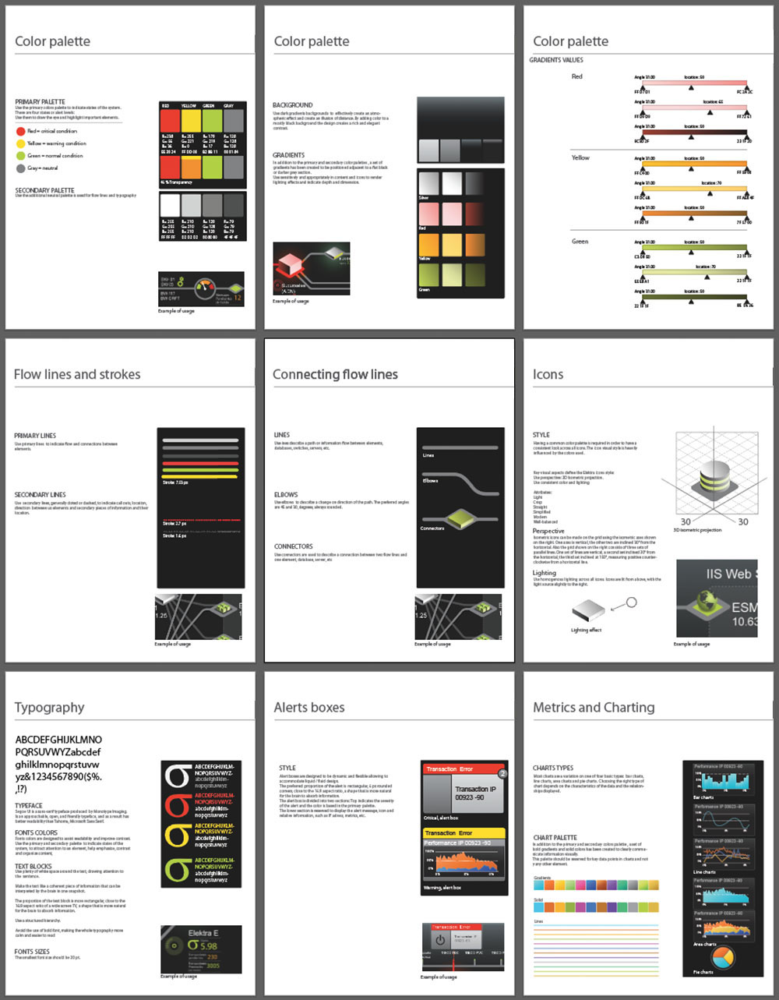

The challenge
The heart of one of the largest banks in Latin America is its network operations center (NOC), where a team of several dozen engineers monitors billions of data points every day in near-real time. All mission-critical banking operations, from credit card fraud monitoring to bank robbery early warning systems, feed into one highly secure room, with data sources as diverse AS/400, Tibco Spotfire, OSIsoft PI, Alnova FS, BMC Patrol, and SQL Server to name just a few.
Because NOC engineers spent most of their day monitoring live data streams on ASCII terminals, they quickly reached the limit of human capacity. With finite space in the operations center, they couldn't solve the problem by adding more staff. They had to make the existing staff more effective.
The client asked me to reinvent their NOC from the ground up with just four requirements:
- The solution may use only existing hardware and software – no new computers, changing operating systems, or even a service pack.
- Build upon the engineers' existing skill sets. The new system cannot require extensive retraining.
- The technologies used must meet preexisting standards for certified security and auditability.
- Bank staff needed to be able to maintain and extend the system without ongoing support.
What they had
The screens the operations center staff stared at were torture to look at. Each NOC employee was responsible for a specific part of the business, represented by scrolling data streams on their terminal and on a bank of 54 large-format monitors at one end of the room.
I observed that when the engineers' eyes began to tire toward the end of each shift, they would get up from their desks and approach the monitor array at the front of the room to get a better view of the tiny scrolling boxes of text they were required to watch.
Ethnographic research
This project afforded me a most unusual opportunity: since I was designing a system for a very small group of people, I had the chance to interview each user individually and tailor the system design to their needs with unprecedented specificity. Rather than generalizing people into personas, I addressed the needs of the actual people in the system design, down to their roles and responsibilities and even the location of their desks within the NOC.
System architecture
I quickly learned that the operations staff needed an abstract representation of their system, which required first creating a deep understanding of their system architecture.
Designing visualizations
On the client side, I worked with several engineers, architects, and IT professionals to arrive at a clear, understandable representation of the things that mattered most.
After several rounds of iteration, I landed on a representation that made sense to the users. The next step was to optimize the diagram for presentation on their workstation and monitor bank screens.
Increasing fidelity
Once things looked good as pencil sketches, the following steps were a series of progressive increases in the fidelity of the design – several rounds of wireframes to model what the system would look like on both desktop terminals and the monitor bank.
Developing a visual language
Informed by a solid system representation, the next step was to determine the diagrams' appearance. The client selected their favorite of several mood boards that reflected the visual character they liked best.
I then applied that visual language to the diagrams...
...created an accompanying style guide...
...and a parallel functional specification detailing how to build, maintain, and modify the visualizations.
The result
When all was said and done, the client had a beautiful, functional, deeply engaging center that markedly improved their operational effectiveness and their staff's mental state.